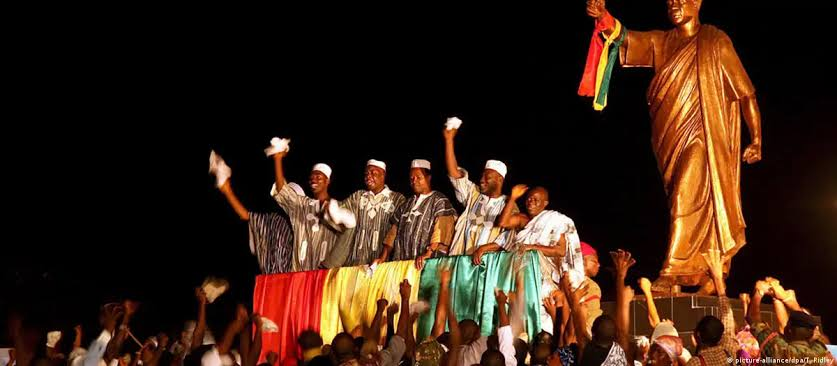
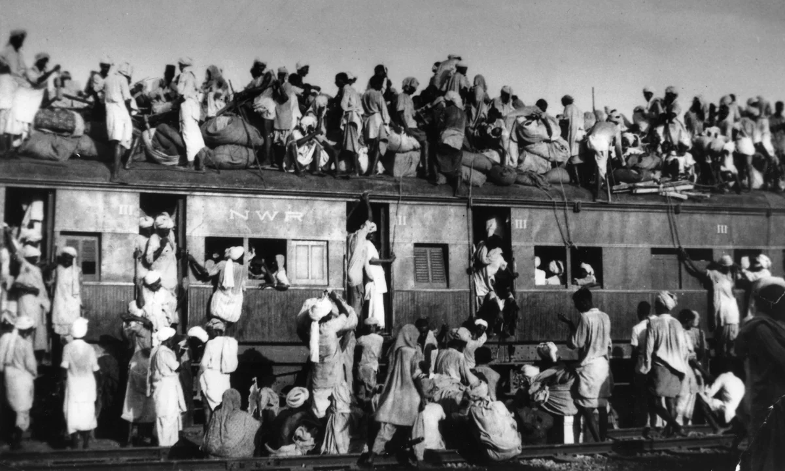
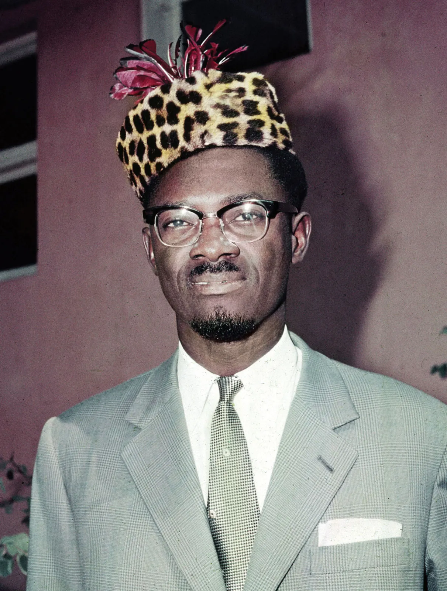
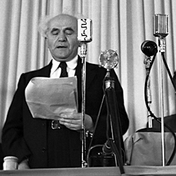
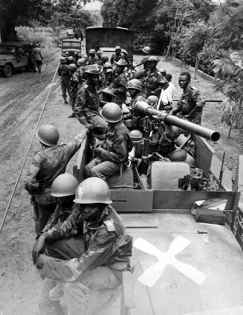
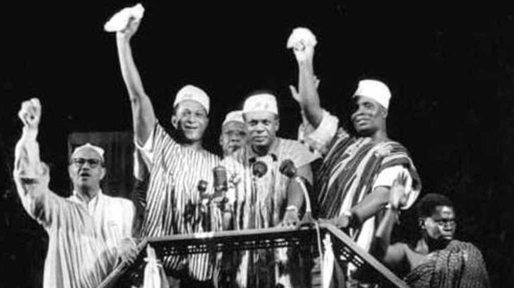
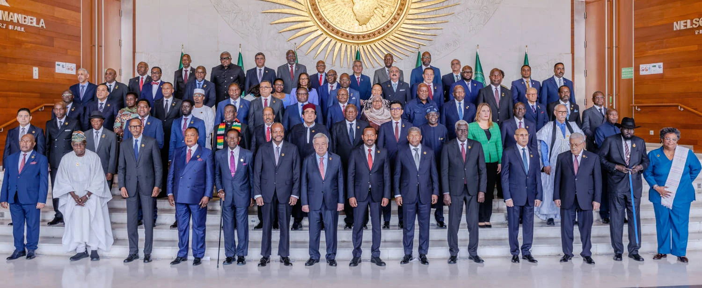

What challenges did newly independent nations face, and did independence deliver what people hoped for?
THE DECOLONIZATION TIMELINE — 1945 TO 1975
1947India & PakistanBritain grants independence; partition divides South Asia with catastrophic violence
1948Israel Founded; NakbaState of Israel declared; 700,000 Palestinians expelled or flee
1957Ghana IndependentFirst sub-Saharan African colony gains independence under Nkrumah
1960"Year of Africa"17 African nations gain independence; Congo crisis and Lumumba's assassination follow
1962Algeria FreeAfter 8 years of brutal war, France withdraws from Algeria
1975Africa Mostly FreePortugal gives up its African colonies; over 80 new nations now exist
INTRODUCTION

Kwame Nkrumah declares Ghana's independence, March 6, 1957 — the first sub-Saharan African colony to break free. (Wikimedia Commons)
On March 6, 1957, in the capital city of Accra, a man named Kwame NkrumahThe leader of Ghana's independence movement and its first prime minister; one of the most important figures in the story of African liberation. stepped onto a stage and told a crowd of thousands that their country had a new name. It was no longer called the Gold Coast — the name Britain had given it when they took it. Now it was Ghana. The people screamed. Mothers lifted children. Men wept. And somewhere across the ocean, the British government signed the last papers and let go of another piece of its empire. What happened next was not simple. The joy was real. But what came after — for Ghana, for India, for the Congo, for Algeria, for dozens of countries all around the world — was far more complicated than a celebration in a crowd.
On March 6, 1957, a man named Kwame Nkrumah stood in front of thousands of people in Africa. He told them their country had a new name: Ghana. Before that day, Britain had ruled it and called it the Gold Coast. People cried, cheered, and held their children up high. It was a moment of real joy. But the years after that moment were hard. Getting free from an empire was one thing. Building a country from scratch — that was something else entirely.
Between 1945 and 1980, over 80 new nations were born. European empires that had controlled most of Asia, Africa, and the Middle East for centuries collapsed with breathtaking speed. DecolonizationThe process by which colonies break free from the countries that ruled them and become independent nations. was one of the largest political transformations in human history. But liberation rarely came peacefully, and the problems the new nations inherited were not ones independence alone could solve.
Between 1945 and 1980, more than 80 new nations were created. European empires that had ruled most of the world for hundreds of years fell apart quickly. This process of colonies becoming free is called decolonization. It was one of the biggest changes in history. But freedom was often violent, and the new countries faced enormous problems that independence by itself could not fix.
THE COLONIAL WORLD — AND WHY IT COLLAPSED
A map of colonial Africa, circa 1913 — nearly the entire continent divided among Britain, France, Belgium, Germany, Portugal, Italy, and Spain. The borders were drawn in European capitals, with no regard for the peoples who already lived there. (Wikimedia Commons)
HOW EMPIRES TOOK THE WORLD
By 1900, European powers controlled roughly 85 percent of the world's land surface. Britain, France, Belgium, the Netherlands, Portugal, and others had seized territories across Africa, Asia, the Caribbean, and the Pacific over the previous three centuries. They called it empire. The people who lived under it called it something else. Colonial rule meant that the laws, the economy, the schools, the military, and even the language of a place were controlled by a foreign government on the other side of the ocean. Self-determinationThe idea that people have the right to choose their own government and control their own country. — the idea that people should govern themselves — was a principle Europeans declared at home but refused to apply abroad.
By 1900, European countries controlled about 85 percent of all land on Earth. Britain, France, Belgium, and others had taken over large parts of Africa, Asia, and other regions. Colonial rule meant that a foreign government far away controlled your laws, schools, money, and military. Europeans believed in freedom for themselves — but not for the people they ruled.
THREE THINGS THAT BROKE THE EMPIRES
World War II destroyed European empires in three ways they had not anticipated. First, the war left Britain, France, and the Netherlands economically ruined — they no longer had the money to police the world. Second, hundreds of thousands of colonial soldiers had fought and died for their colonizers in Europe; they returned home demanding to know why freedom was for Europeans only. Third, the United States and the Soviet Union — the two new superpowers — both publicly opposed European colonialism, though each had their own reasons. The age of unchallenged empire was over, and nationalist movementsOrganized groups of people who fought to make their country independent from foreign control. across Asia and Africa knew it.
World War II ended European empires in three big ways. First, the war left European countries broke — they could not afford to keep controlling their colonies. Second, soldiers from the colonies had fought for Europe in the war and came home asking why freedom was only for white Europeans. Third, the United States and the Soviet Union — the world's two new superpowers — both said they were against colonialism. Nationalist movements everywhere saw their chance.
THE BORDERS THAT CAUSED EVERYTHING
In 1884 and 1885, European leaders gathered in Berlin to divide Africa among themselves. No African leader attended. The borders they drew were straight lines on a map — clean, geometric, and completely disconnected from the actual human geography of the continent. These lines split ethnic groups, language communities, and kingdoms that had existed for centuries. They also forced longtime enemies into the same territory. When independence came, these borders did not change. The new nations of Africa, Asia, and the Middle East inherited colonial maps — which meant they inherited the conflicts those maps had created.
In 1884, European leaders met in Berlin to split Africa between them. No African was invited. They drew borders as straight lines on a map, with no idea or care about the people already living there. These lines cut apart communities that had lived together for centuries. They also trapped enemies inside the same borders. When independence arrived, the new nations kept those same borders — and inherited all the problems that came with them.
DID YOU KNOW
When European leaders met in Berlin in 1884 to divide Africa, the meeting lasted only three months — but the borders they drew lasted over a century. Of the 54 countries in Africa today, the vast majority still use borders created by that conference. Not a single African person was in the room when it happened.
THE ECONOMY OF DEPENDENCE
Colonial economies were not built for the people who lived in them. They were built to extract raw materials — cotton, rubber, gold, oil, cocoa, copper — and ship them to European factories. Local industries that might compete with European goods were actively discouraged or made illegal. Schools taught colonial languages and trained clerks and low-level administrators, not engineers or doctors or political scientists. When independence came, the new nations had economies that exported raw materials to the same countries that had just colonized them. This economic structure — neo-colonialismA situation where a country is officially independent but its economy is still controlled by wealthier foreign nations. — meant that formal political independence did not automatically produce economic freedom.
Colonial economies were designed to help Europe, not the people living in the colonies. Colonies grew crops or mined minerals and sent them to European factories. Local industries were kept small on purpose. Schools trained local people to work for the colonial government — not to run their own country. When independence came, many new nations were still selling raw materials to the same countries that had colonized them. Being politically free did not automatically mean being economically free — a situation called neo-colonialism.
THE WAVE BREAKS — INDEPENDENCE AROUND THE WORLD
INDIA AND PAKISTAN: FREEDOM AT MIDNIGHT

Refugees fleeing during the 1947 partition of India and Pakistan. An estimated 10 to 20 million people were displaced in one of history's largest forced migrations. (Wikimedia Commons)
At midnight on August 15, 1947, India became independent from Britain. It was a moment decades in the making — the result of a mass movement led in part by Mahatma GandhiThe leader of India's independence movement who used nonviolent protest to challenge British rule. and the Indian National Congress. But independence came paired with something devastating: partitionThe dividing of a territory into two or more separate countries, often along religious or ethnic lines.. Britain divided its colony into two nations — Hindu-majority India and Muslim-majority Pakistan. The logic was to separate communities that British rulers claimed could not coexist. The result was catastrophic. Between 10 and 20 million people were forced to move. Up to 2 million were killed in communal violence as Hindus, Muslims, and Sikhs attacked each other across the new border. Families that had lived in the same village for generations were suddenly on opposite sides of a new country.
At midnight on August 15, 1947, India became free from British rule. It was a huge moment people had fought and waited for. But independence came with a terrible cost. Britain split the colony into two countries: India for Hindus and Pakistan for Muslims. Between 10 and 20 million people had to leave their homes. Up to 2 million people were killed as communities turned on each other across the new border. Families who had lived as neighbors for their whole lives were suddenly on opposite sides of two different countries.
GHANA: THE FIRST LIGHT IN SUB-SAHARAN AFRICA
When Ghana gained independence on March 6, 1957, it sent a message across the entire African continent: it was possible. Under Kwame Nkrumah, Ghana became a symbol of what nationalismA strong belief in independence and pride in one's own nation, often as a force against foreign rule. could achieve. Nkrumah called for "Africa for Africans" and pushed for unity among newly independent African nations. He hosted independence leaders from across the continent and attempted to build a modern industrial economy. But within a decade, Ghana's economy was struggling, Cold War pressures were intensifying, and in 1966, while Nkrumah was abroad, his own military overthrew him in a coupWhen the military or another group illegally takes over a government, usually by force.. The pattern of elected leaders replaced by military governments would repeat across the continent.
When Ghana became free in 1957, it inspired the rest of Africa. Their leader, Kwame Nkrumah, said Africa should belong to Africans and called for African nations to work together. He tried to build a modern economy. But within ten years, the economy was in trouble and Cold War pressures were making things harder. In 1966, while Nkrumah was traveling, his own military took over the government. This kind of military takeover — called a coup — would happen again and again in newly independent countries across Africa and Asia.
THE CONGO: INDEPENDENCE AND ASSASSINATION

Patrice Lumumba, the Congo's first elected prime minister, 1960. He was assassinated within months of independence, with documented CIA and Belgian involvement. (Wikimedia Commons)
Belgium had ruled the Congo for over 70 years, and when it finally granted independence in June 1960, it handed over a country with almost no trained doctors, lawyers, or engineers — by Belgian design. The Congo's first elected prime minister, Patrice LumumbaThe first elected prime minister of the Congo, whose assassination in 1961 was later linked to the CIA and Belgian government., immediately faced a military mutiny and a secessionist crisis in the mineral-rich Katanga province. When Lumumba asked the Soviet Union for help — something the United States refused to provide — American officials labeled him a communist threat. The CIA organized his removal from power, and within months of independence, Lumumba was arrested, handed over to his enemies, and executed. His assassination became a defining symbol of Cold War interferenceWhen the United States or Soviet Union intervened in other countries' politics to make sure their side won the Cold War competition. in the decolonizing world: newly independent nations were pressured, manipulated, or overthrown if they made choices the superpowers did not approve of.
Belgium ruled the Congo for over 70 years and on purpose kept Congolese people from getting advanced education. When the Congo became free in 1960, there were almost no trained doctors, lawyers, or engineers. The new prime minister, Patrice Lumumba, quickly faced a military rebellion and a crisis in the diamond-rich Katanga region. When he asked the Soviet Union for help, the United States labeled him a communist enemy. The CIA helped remove him from power, and within months of independence, Lumumba was captured and killed. His assassination showed how the Cold War had reached into the heart of Africa: new nations that made choices the superpowers disliked could be destroyed.
ALGERIA: THE WAR THAT FRANCE REFUSED TO CALL A WAR
France did not treat Algeria as a colony — it treated it as France itself. Over a million French settlers called Algeria home, and French officials insisted Algeria was as French as Paris. When Algerian nationalists launched an armed uprising in November 1954, France responded with overwhelming military force, including the systematic use of torture against suspected insurgents. The war lasted eight brutal years. France used napalm, collective punishment, and mass detention camps. The FLNFront de Libération Nationale — the Algerian nationalist organization that fought for independence from France. (National Liberation Front) used bombings, assassinations, and an urban guerrilla campaign. Estimates suggest between 300,000 and 1.5 million Algerians died before France finally withdrew in 1962. The Algerian War of Independence became one of the most studied examples of anti-colonial resistance in history — and a template for liberation movements on every continent.
France considered Algeria to be part of France itself — not just a colony. Over a million French settlers lived there, and when Algerians started fighting for independence in 1954, France refused to give up without a brutal war. French forces used torture, napalm, and prison camps. The Algerian independence movement used bombings and guerrilla fighting. The war lasted eight years and killed hundreds of thousands of Algerians. France finally withdrew in 1962. The Algerian War became famous around the world as an example of how hard — and how violent — it could be to break free from a colonial power.
FAST FACTS
THE SCALE OF DECOLONIZATION: 1945 TO 1980
80+new nations created during the decolonization era — more than any other period in recorded history
2Mpeople killed in communal violence during the 1947 partition of India and Pakistan alone
17African nations that gained independence in 1960 alone — a single year so historic it is called "The Year of Africa"
700KPalestinians displaced or forced to flee during the 1948 Arab-Israeli War — an event Palestinians call the Nakba, meaning "catastrophe"
85%of the world's land surface controlled by European empires at their peak — a statistic that fell dramatically in just 35 years
ISRAEL, PALESTINE, AND THE QUESTION THAT REMAINS OPEN
Palestinian families displaced during the 1948 Arab-Israeli War. This event is called the Nakba — Arabic for "catastrophe." (Wikimedia Commons)

David Ben-Gurion declares the establishment of the State of Israel, May 14, 1948, beneath a portrait of Theodor Herzl, founder of modern Zionism. (Wikimedia Commons)
The origins of the Israel-Palestine conflict reach into the late 1800s, when a European Jewish nationalist movement called ZionismA movement supporting the creation of a Jewish homeland in the historical land of Israel, called Palestine by Arab residents. began advocating for a Jewish state in Palestine. At that time, Palestine was home to a majority Arab Muslim and Christian population, and it was ruled by the Ottoman Empire. After World War I, Britain took control of Palestine under what was called the British Mandate and made contradictory promises: one to Jewish immigrants and one to Arab residents. Jewish immigration accelerated in the 1930s and 1940s as the Holocaust killed six million Jews and survivors desperate for a safe homeland poured into Palestine. In 1947, the United Nations voted to divide Palestine into two states. Arab leaders rejected the plan. In May 1948, the State of Israel was declared. The Arab states immediately invaded. Israel won the war. In the process, approximately 700,000 Palestinians were expelled from or fled their homes — an event Palestinians call the NakbaArabic word meaning "catastrophe" — used by Palestinians to describe the displacement of their people during the 1948 Arab-Israeli War.. The conflict created by these events has never been resolved.
The conflict between Israelis and Palestinians has roots going back to the late 1800s. Jewish nationalists — called Zionists — wanted a homeland in Palestine. Palestine at that time was mostly Arab. After World War I, Britain controlled Palestine and made promises to both Jewish immigrants and Arab residents. The Holocaust killed six million Jews, and many survivors moved to Palestine hoping for safety. In 1948, Israel declared independence. Arab countries attacked and lost. About 700,000 Palestinians were forced from their homes in the fighting — an event Palestinians call the Nakba, meaning "catastrophe." The conflict between Israelis and Palestinians has continued ever since.
LIVES TORN APART — WHAT INDEPENDENCE ACTUALLY FELT LIKE
A documentary photograph from the Algerian War of Independence, which lasted from 1954 to 1962. France used massive military force to hold its colony; Algeria paid in hundreds of thousands of lives. (Wikimedia Commons)
PARTITION: WHEN NEW BORDERS CUT THROUGH PEOPLE
The human cost of partition — the drawing of new borders — was staggering in every country where it happened. In India and Pakistan, an estimated 10 to 20 million people were displaced in a matter of weeks. Trains carrying refugees in both directions were attacked; entire villages were massacred. The violence was not only between Hindus and Muslims: it was between neighbors, between communities that had shared markets, festivals, and languages for generations. A Sikh farmer in Punjab who had never thought of himself as anything but Punjabi suddenly found himself on the Pakistani side of a line and was told to leave everything he owned. Meanwhile, a Muslim family in Delhi who had lived there for five generations was told their home now belonged to someone else. Independence created new countries — but it also destroyed old lives.
When new borders were drawn, real people had to leave their homes with only what they could carry. In India and Pakistan, 10 to 20 million people were forced to move in just a few weeks. Trains carrying refugees were attacked. Entire villages were killed. People who had been neighbors for generations suddenly became enemies. A family that had lived somewhere for generations might be told to leave because the new border put them on the "wrong" side. Independence created new countries — but it destroyed millions of lives in the process.
THE COLD WAR CHOOSING SIDES
Every newly independent nation had to navigate a world divided between two superpowers. The United States and Soviet Union were locked in the Cold WarThe tense political and military competition between the United States and Soviet Union from 1945 to 1991, which played out in countries around the world. — a global competition between capitalism and communism that neither side was willing to lose. For a new nation like the Congo or Vietnam, this meant that any choice — whom to trade with, whose military advisors to accept, which political party to support — was interpreted by one superpower or the other as a declaration of loyalty or a threat. The CIA helped overthrow elected governments in Iran (1953), Guatemala (1954), and the Congo (1960). Soviet intelligence did the same on their side. GeopoliticsThe way countries use geography and global power to advance their political and military interests. — the game of global power — treated newly independent nations as pieces to be moved, not countries with the right to choose their own path.
Every new nation also had to deal with two superpowers — the United States and the Soviet Union — who each wanted them on their side. This global competition between capitalism and communism was called the Cold War. For a new country like the Congo or Vietnam, every decision was seen by one superpower as either a threat or a sign of loyalty. The United States helped overthrow elected governments in Iran, Guatemala, and the Congo when those governments made choices America did not like. The Soviet Union did the same. New countries that were supposed to be free often found their choices controlled by outside powers anyway.
ART SPOTLIGHT
The Wounded Deer (El venado herido) — Frida Kahlo, 1946
Mexican painter Frida Kahlo painted this self-portrait during the same years that decolonization movements were accelerating across Latin America, Asia, and Africa. Kahlo, who had faced Mexican colonialism's legacies throughout her own life, became an icon for resistance movements worldwide.
Kahlo completed this painting while recovering from her eighteenth surgery — and despite the pain, she deliberately left the deer's expression calm rather than anguished. She later said the calm face was intentional: suffering was not the same as defeat. Resistance movements across the decolonizing world adopted Kahlo's images as symbols of survival precisely because her work showed that a person could be wounded and still refuse to break.
WOMEN AND INDEPENDENCE MOVEMENTS
Across the decolonizing world, women played central roles in independence movements — organizing, fighting, and sacrificing — and then found themselves pushed aside when independence arrived. In Algeria, women served as fighters, messengers, and bomb carriers for the FLN. In India, women marched, went to prison, and led boycotts against British goods. In Ghana, market women organized economic protests that destabilized British rule. But in country after country, the constitutions and governments that emerged after independence concentrated power in the hands of men. The promise of liberation — which many women understood to include liberation from patriarchy as well as colonialism — was only partially kept.
Women were central to independence movements everywhere. In Algeria, women fought and risked their lives for the independence cause. In India, women marched and went to prison. In Ghana, women organized economic protests. But when independence came, the new governments were mostly run by men. Women who had fought for freedom often found that the new country did not give them equal rights. Independence from colonialism did not automatically mean equality at home.
BROKEN PROMISES — WHAT INDEPENDENCE DID AND DID NOT DELIVER

Military coups replaced elected governments across newly independent Africa and Asia in the 1960s and 1970s — often with quiet support from Cold War powers. (Wikimedia Commons)
THE PATTERN OF COUPS
Between 1960 and 1980, at least 30 military coups toppled governments in newly independent African nations alone. The reasons were not random. Colonial powers had built colonial armies to suppress local populations — not to guard democratic elections. When independence came, these armies were the most organized and powerful institutions in the country. Civilian governments were new, untested, and often politically fractured because they represented populations that colonialism had deliberately divided. When an elected leader faced economic crisis or political opposition — and nearly all of them did — the military often stepped in. Sometimes a coup had Cold War backing. Sometimes it did not. The result was the same: the democratic promise of independence, which people had fought and died for, was erased. Neo-colonialismA situation where a country is officially independent but its economy is still controlled by wealthier foreign nations. operated alongside these coups: foreign corporations kept extracting the country's resources under new political arrangements, just with local strongmen instead of colonial administrators.
Between 1960 and 1980, at least 30 military coups overthrew elected governments in Africa alone. This was not a coincidence. Colonial powers had trained armies to control people — not to support democracy. When independence came, those armies were the strongest organizations in the country. When elected governments faced problems — and they all did — the military often took over. Cold War powers sometimes helped these coups happen. The democracy people had fought for was destroyed again and again. And foreign companies kept taking the country's resources just as before — only now there was a local military leader in charge instead of a European colonial governor.
THE NATION-STATE PROBLEM
The concept of a nation-stateA country where the borders and the government are supposed to reflect a single people or national identity. — a country where borders match a single people or national identity — was a European invention that did not map cleanly onto the rest of the world. In Europe, nation-states had been built over centuries, often through wars that sorted populations, expelled minorities, and created reasonably homogeneous national identities. In Africa and Asia, decolonization created nation-states almost overnight out of territories that contained dozens of ethnic groups, languages, and religious communities — all inside borders drawn by foreigners for entirely different purposes. The challenge of building national unity out of this diversity was real. It was not impossible — many newly independent nations succeeded over time — but it was a problem that European colonialism had created and that the new governments were left to solve alone.
A nation-state is supposed to be a country where the borders match one unified people. But in Europe, these identities were built over centuries of wars and migrations. In Africa and Asia, new countries were created overnight, inside borders drawn by Europeans that put dozens of different ethnic groups, languages, and religions together. Building a sense of national unity out of all that diversity was enormously difficult. It was a problem colonialism had created — and the new governments had to solve it themselves, with very little money and very little time.
WHAT INDEPENDENCE DID DELIVER
Despite all the complications, the decolonization era produced real and lasting achievements. Schools, hospitals, roads, and universities were built. Countries that had never trained a generation of their own doctors or lawyers began doing so. Languages and cultural traditions that colonialism had tried to suppress were revived and celebrated. The United Nations, which grew from 51 members in 1945 to 144 members by 1975, became a genuine forum where formerly colonized nations had a voice. Pan-African and Pan-Asian solidarity movements created new forms of international cooperation. And the sheer fact of independence — of governing oneself, of flying one's own flag, of making one's own mistakes — mattered enormously to people who had lived under foreign rule. Independence did not deliver everything that people had hoped. But it was not nothing.
Despite all the problems, independence brought real gains. New schools, hospitals, universities, and roads were built. Languages and traditions that colonialism had tried to destroy came back. The United Nations grew as more countries joined and had a real voice in world affairs. Pan-African and Pan-Asian movements created new connections between countries that had been separated by colonialism. And the simple fact of self-rule — of governing your own country, making your own choices — mattered deeply to people who had never had that before. Independence was not perfect. But it was not nothing either.
The founding of the Organisation of African Unity (OAU) in Addis Ababa, Ethiopia, May 1963 — an attempt by newly independent African nations to coordinate their political futures and resist external interference. (Wikimedia Commons)PRIMARY SOURCE MOMENT

Kwame Nkrumah addresses a crowd, circa 1957-1960. Wikimedia Commons.
"We have awakened. We will not sleep anymore. Today, from now on, there is a new African in the world! That new African is ready to fight his own battles and show that after all, the black man is capable of managing his own affairs. We are going to demonstrate to the world, to the other nations, that we are prepared to lay our own foundation."
— Kwame Nkrumah, Independence Address, Accra, Ghana, March 6, 1957
WHY THIS MATTERS: Nkrumah's speech was heard around the world — by independence movements from Algeria to Vietnam. Notice that he is not only celebrating freedom from Britain. He is making a larger argument: that the "black man is capable of managing his own affairs." This was a direct challenge to the racist foundation that had justified colonialism — the claim that non-European peoples needed European guidance. As you read this speech, consider: what specific promises is Nkrumah making? And given everything that happened in the following decade — the coups, the Cold War interference, the economic struggles — how would you judge whether those promises were kept?
THEN AND NOW
THE BORDERS DRAWN IN 1884 STILL DIVIDE PEOPLE TODAY — BUT THE PEOPLE ARE FIGHTING BACK ON THEIR OWN TERMS.
1957
Crowds in Accra celebrating Ghana's independence, 1957. Wikimedia Commons.
NOW

African heads of state at a recent African Union summit — independent nations choosing their collective future. Wikimedia Commons / CC license.
THEN
In 1957, Ghana became the first sub-Saharan African colony to gain independence. In the photograph, crowds in Accra fill the streets in genuine celebration. They are not celebrating a gift from Britain. They are celebrating something they had fought for, organized for, and sacrificed for across decades. Kwame Nkrumah stood before them and promised a future they would build themselves.
NOW
Today, 55 African nations send representatives to the African Union, a continental organization that coordinates political, economic, and security decisions across Africa. Its motto is "An Integrated, Prosperous and Peaceful Africa." The African Union operates entirely on African terms, with African leadership — something that would have been unimaginable when European powers were dividing the continent in 1884.
CONNECTION
The problems that decolonization created — colonial borders, extracted economies, Cold War interference — did not disappear with independence. Many of them are still present today. But what also continued was the determination that Nkrumah represented in 1957: the belief that African nations have the right and the capacity to shape their own futures. The African Union is imperfect and faces serious challenges. But its existence is the direct consequence of the independence movements of the 20th century. The work Nkrumah's generation started is still unfinished — and still being carried forward.
When you think about what happened in the Congo, India, Algeria, and Palestine — where the promises of independence ran into Cold War interference, colonial borders, and economic dependency — what would you say is the most important unfinished task left by the decolonization era?